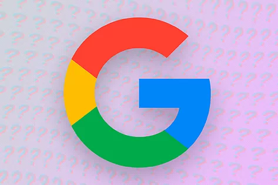

Google el más utilizado
El buscador más utilizado de todos -alrededor de un 90% de los usuarios abre Internet con ella como página principal- es la web más requerida ya que, gracias ella, accedemos de manera rápida a cualquier tema, incluyendo otras páginas web, imágenes, vídeos u ofertas.

Youtube
Creado en 2005, Youtube es el segundo portal más popular. Y es que a la hora de buscar vídeos, todo el mundo recurre a él. Permite subirlos y compartirlos y su auge no para de crecer, escalando posiciones en el ranking sin parar.

Facebook
Se trata de la red social por excelencia y, por tanto, la tercera web más visitada. Y es que Facebook consigue conectar a personas de todos los puntos del planeta de manera sencilla.

Twiitter
Tras Facebook, aparece Twitter como la siguiente red social más popular. Y como toda red, cada vez está más extendida. A través de esta página podemos compartir textos, fotos y vídeos de manera sencilla, rápida y visual..
Wikipedia
Es una enciclopedia libre,políglota y editada de manera colaborativa.Cuya financiación está basada en donaciones. Sus más de 60 millones de artículos en 329 idiomas han sido redactados en conjunto por voluntarios de todo el mundo.
Baidu
Baidu es el buscador chino. Dado los millones de habitantes del país asiático, es lógico que éste se convierta en el segundo buscador más visitado del mundo. Da acceso a todos los recursos que ofrece Google y también a películas en MP3..